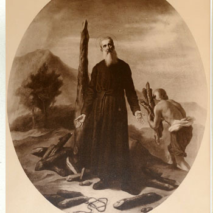

Isusovački blaženici
Svećenik
Bl. Antun Ishida
1570. – 1632.
Japanski propovjednik Anthony Ishida poznavao je budističku misao i branio kršćansku vjeru. Godinama je služio u tajnosti, a zatim podnio dugotrajno zatočeništvo i mučeništvo.
Tekst je preveden i prilagođen uz pomoć umjetne inteligencije.

Izvor slike
- Spomendan
- 6. veljače
- Zaštitništvo
- Nije navedeno u izvoru
- Životni vijek
- 1570. – 1632.
- Djelovanje
- Obrazovanje i poučavanje vjere · Progoni i progonstvo · Mučeništvo
- Razdoblje
- 16., 17. stoljeće
- Rođenje — dostupni podaci
- 1570.; dan i mjesec nisu potvrđeni u provjerenom izvoru.
- Mjesto rođenja
- Japan
- Datum smrti
- 03.09.1632.
- Mjesto smrti/mučeništva
- Brdo mučenika (Nishizaka), Nagasaki, Japan
- Okolnosti smrti/mučeništva
- Spaljen na sporoj vatri nakon zatočeništva i mučenja u sumpornim izvorima Unzena.
- Uloga
- Svećenik
- Mučenik
- Da
- Ostale oznake
- Misionar i dušobrižnik progonjenih kršćana
- Pripadnost
- Isusovac
- Drugi oblici imena
- Anthony Ishida · Anthony
Životopis
Anthony Ishida potjecao je iz Japana i prije redovničkoga života bio vjeroučitelj. U isusovački novicijat stupio je 1589. Dok je studirao teologiju, progon pod Hideyoshijem odnio je Pavla Mikija i drugove. Ishida se morao skrivati do promjene političkih okolnosti. Poslije je postao svećenik, propovjednik i poznavatelj budističkoga nauka.
Nakon zabrane kršćanstva 1614. nastavio je potajno služiti oko Hiroshime, krećući se prerušen. Uhićen je 1616., a oslobođen tri godine poslije, nakon smrti velikaša koji ga je zatvorio. Zatim je još godinama djelovao u Nagasakiju.
Novo uhićenje 1629. završilo je dugim zatočeništvom. S drugim svećenicima i jednim franjevačkim trećoredcem podvrgnut je mučenju na vulkanskim izvorima. Ponavljana uranjanja u vrelu vodu nisu ga navela na odreknuće od vjere. Vraćen je u Nagasaki i pogubljen polaganim spaljivanjem 1632.; pepeo mu je rasut u more.
Uspomena na zajednicu mučenika. Službena japanska crkvena komisija navodi crkvu u Fudanohari na Unzenu posvećenu blaženom Antoniju Ishidi i drugovima. U svibnju se ondje održava spomen mučenika. Taj podatak govori o trajnoj mjesnoj uspomeni, a ne mijenja njegov odobreni dan smrti u kalendaru.
Tekst je preveden i prilagođen uz pomoć umjetne inteligencije.
Pročitaj više na izvornoj stranici ↗